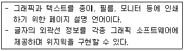
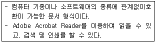
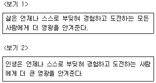
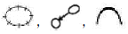
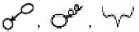
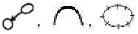
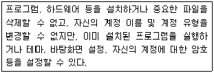
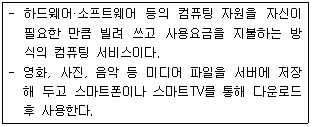
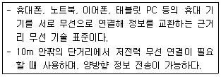
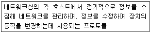

워드프로세서-(구-1급) (2020-07-04 기출문제)
1과목: 워드프로세싱 일반
1. 다음 중 워드프로세서에서 사용하는 기본 용어에 관한 설명으로 옳지 않은 것은?
- 영문균등(Justification): 단어와 단어 사이의 간격을 균등 배분하여 문장의 왼쪽 끝만 맞추어 균형을 유지 하는 기능
- 색인(Index): 문서의 중요한 내용들을 빠르게 찾기 위하여 문서의 맨 뒤에 용어와 기록된 쪽 번호를 오름차순으로 기록하여 정리한 목록
- 옵션(Option): 명령이나 기능을 수행할 때 선택할 수있는 항목들을 모두 보여주는 것
- 마진(Margin): 문서 작성 시 문서의 균형을 위해 남겨두는 상, 하, 좌, 우의 여백
(정답률: 74%)

2. 다음 중 워드프로세서에서 매크로(Macro)에 대한 설명으로 옳지 않은 것은?
- 일련의 작업 순서를 키보드의 특정 키에 기록해 두었다가 필요할 때 한 번에 재실행해 내는 기능이다.
- 동일한 내용의 반복 입력이나 도형, 문단 형식, 서식 등을 여러 곳에 반복 적용할 때 효과적이다.
- 작성한 매크로는 별도의 파일로 저장할 수 있으며 편집이 가능하다.
- 마우스 동작을 포함한 사용자의 모든 동작을 기억하는 것을 '키 매크로'라고 한다.
(정답률: 75%)
3. 다음 중 KS X 10⑤-1(유니코드)에 대한 설명으로 옳지 않은 것은?
- 용도: 국제 표준 코드, 정보처리/정보교환용
- 장점: 현대 한글의 대부분을 표현할 수 있음
- 표현 글자 수: 완성형 한글 11,172자, 한글 자모 240자
- 표현 바이트 수: 모든 문자 2바이트(16비트)
(정답률: 62%)
4. 다음 중 워드프로세서에서 특정 내용을 검색하기 위한 찾기 기능의 설명으로 옳지 않은 것은?
- 교정 부호나 메모의 내용을 지정하여 검색할 수 있다.
- 와일드카드 문자(*, ?)를 사용하여 검색할 수 있다.
- 블록을 지정하여 특정 영역에 대해서만 검색할 수 있다.
- 글자 모양이나 문단 모양, 스타일 등을 지정하여 검색할 수 있다.
(정답률: 50%)
5. 다음 중 한글 워드프로세서의 문서파일 저장 기능에 관한설명으로 옳지 않은 것은?
- 저장할 때 암호를 지정하여 다른 사람의 열람을 제한할 수 있다.
- 저장하기 대화상자에서 폴더를 새로 만들거나 삭제 할 수 있다.
- 기존 문서를 다른 이름으로 저장하면 기존 파일은 삭제된다.
- 문서 파일의 저장위치나 파일 이름 및 형식을 변경하여 저장할 수 있다.
(정답률: 81%)
6. 다음 중 머리말과 꼬리말에 대한 설명으로 옳지 않은 것은?
- 한 페이지의 맨 위와 아래에 내용이 쪽마다 고정적으로 반복되는 것을 말한다.
- 머리말과 꼬리말에는 책의 제목, 그 장의 제목, 쪽 번호 등을 넣는다.
- 머리말과 꼬리말의 내용을 짝수쪽, 홀수쪽에 다르게 입력할 수 있다.
- 머리말에 숫자, 문자, 그림은 입력할 수 있으나 표는 입력할 수 없다.
(정답률: 73%)
7. 다음과 가장 관련이 있는 글꼴 구성 방식은 무엇인가?

- 벡터(Vector)
- 포스트스크립트(Post Script)
- 오픈타입(Open Type)
- 트루타입(True Type)
(정답률: 67%)
8. 다음 중 워드프로세서의 인쇄 기능에 대한 설명으로 옳지 않은 것은?
- 문서의 내용을 종이에 출력하지 않고 파일로 디스크에 저장할 수 있다.
- 프린터의 해상도를 높게 설정하면 출력시간은 길어지지만 대신 선명하게 인쇄할 수 있다.
- 문서의 1-3페이지를 여러 장 인쇄할 때 한 부씩 찍기를 선택하지 않으면 1-2-3 페이지 순서로 여러 장이 인쇄된다.
- 미리보기 기능을 사용하여 문서의 내용을 편집할 수는 없다.
(정답률: 69%)
9. 다음 중 전자 출판과 관련된 용어에서 커닝(Kerning)에 관한 설명으로 옳은 것은?
- 글자와 글자 사이의 간격을 미세하게 조정하는 작업이다.
- 제한된 색상을 조합하여 복잡한 색이나 새로운 색을 만드는 작업이다.
- 문자 위에 겹쳐서 문자를 중복 인쇄하거나 배경색을 인쇄한 후에 그 위에 대상체를 인쇄하는 기능이다.
- 이미지 변형 작업, 입출력 파일 포맷, 채도, 조명도, 명암 등을 조절하는 작업이다.
(정답률: 66%)
10. 다음 보기에서 설명하는 확장자는 무엇인가?

- TXT
- DOC
- BAK
(정답률: 79%)
11. 다음 중 문서의 기능으로 가장 거리가 먼 것은?
- 의사 결정의 기능
- 의사 보존의 기능
- 자료 제공의 기능
- 의사 전달의 기능
(정답률: 75%)
12. 다음 중 보고서 작성 시 유의해야 할 사항으로 옳지 않은 것은?
- 읽는 사람의 요청이나 기대에 맞춘 보고서를 작성한다.
- 사실과 의견을 명확하게 구분하여 작성한다.
- 표와 그림 등으로 시각적인 효과를 나타내어 설득력을 높이게 작성한다.
- 각 사안별로 문장을 나누어 소항목에서 대항목으로 점진적으로 작성한다.
(정답률: 72%)
13. 다음 중 문서 작성 시 유의사항으로 옳지 않은 것은?
- 제목은 제목만 보고도 쉽게 문서의 성격과 내용을 알 수 있도록 작성한다.
- 행정효율과 협업 촉진에 관한 규정에 의해 공문서는 한글 맞춤법에 따라 세로로 작성한다.
- 목적이 있는 사외문서라 하더라도 인사말부터 시작하는 것이 기본적인 예의이다.
- 기안문 작성 시 하나의 항목만 있을 경우 항목 구분을 할 필요가 없으므로 번호를 기재하지 않는다.
(정답률: 65%)
14. <보기 1>의 문장이 <보기 2>의 문장으로 수정되기 위해 필요한 교정부호들로만 올바르게 짝지어진 것은?




(정답률: 79%)
15. 다음 중 문서의 수정을 위한 교정 부호의 표기법으로 옳지 않은 것은?
- 문서의 내용과 혼돈되지 않도록 글자 색과 동일한 색으로 표기하도록 한다.
- 한번 교정된 부분도 다시 교정할 수 있다.
- 교정하고자 하는 글자를 명확하게 지적해야 한다.
- 여러 교정부호를 동일한 행에 사용할 때 교정부호가 겹치지 않도록 한다.
(정답률: 79%)
16. 다음 중 문서관리에 대한 내용으로 가장 거리가 먼 것은?
- 문서관리는 문서를 산출한 업무와는 독립적으로 이루어지는 것이 바람직하다.
- 문서관리 시 조직의 업무 활동 분석이 선행되는 것이 좋다.
- 문서관리자는 조직의 업무를 분석함으로써 업무와 문서 사이의 연관성을 이해하고 있어야 한다.
- 업무활동에 기반한 문서관리는 업무 수행을 돕는 강력한 도구가 된다.
(정답률: 73%)
17. 다음 중 문서 파일링 시스템의 도입효과와 관련이 없는 것은?
- 문서 관리의 명확화
- 정보 전달의 원활화
- 사무 공간의 효율적 활용
- 기록 활용에 대한 제비용 증가
(정답률: 74%)
18. 다음 중 전자문서에 대한 설명으로 적당하지 않은 것은?
- 컴퓨터 등 정보처리능력을 가진 장치에 의하여 전자적인 형태로 작성되거나 송신·수신 또는 저장된 문서를 말한다.
- 전자문서의 효력 발생 시기는 전자문서를 수신자가 관리하거나 지정한 전자적 시스템 등에 입력되었을 때 발생한다.
- 전자문서는 공람하였다는 기록을 업무관리시스템 또는 전자문서시스템 상에서 수동으로 표시하며 담당자는 메일로 공람여부를 언제든지 확인할 수 있어야 한다.
- 업무의 성질상 전자문서로 기안하기 곤란하거나 그밖의 특별한 사정이 있지 않은 한 기안은 전자문서로 하는 것을 원칙으로 한다.
(정답률: 61%)
19. 다음은 문서의 발송에 대한 설명이다. 옳지 않은 것은?
- 문서는 정보통신망을 이용하여 발신함을 원칙으로 한다.
- 전자 문서는 행정기관의 홈페이지 또는 공무원의 공식 전자우편 주소를 이용하여 발송할 수 있다.
- 종이문서인 경우에는 이를 복사하여 발송한다.
- 모든 문서는 비밀유지를 위해 반드시 암호화하여 발송 하여야 한다.
(정답률: 71%)
20. 다음 중 공문서 작성에 관한 설명으로 옳지 않은 것은?
- 공문서의 항목 순서를 필요한 경우에는 □, ○, -, · 등과 같은 기호로 표시할 수 있다.
- 문서에 금액을 표시할 때에는 금153,530원(금일십오만삼천오백삼십원)과 같이 표시하여야 한다.
- '업무 실명제'란 주요 정책의 결정 및 집행 과정에 참여하는 관련자의 실명과 의견을 기록·관리하는 제도를 말한다.
- 본문의 내용이 표 형식으로 표의 중간까지만 작성된 경우에는 '끝' 표시를 하지 않고 마지막으로 작성된 칸의 다음 칸에 '이하 빈칸'으로 표시한다.
(정답률: 53%)
2과목: PC 운영 체제
21. 다음 중 한글 Windows 7의 도움말 및 지원 기능에 관한 설명으로 옳지 않은 것은?
- 관련된 항목의 도움말을 쉽게 찾을 수 있는 하이퍼텍스트 기능이 있다.
- 필요한 도움말을 제목별로 검색할 수 있으며, 프린터로 출력할 수 있다.
- 온라인에서 원격지원으로 도움을 받거나 전문가에게 문의할 수 있다.
- 새로운 기술에 대한 내용을 도움말에 추가하거나 수정할 수 있다.
(정답률: 60%)
22. 다음 중 한글 Windows 7에서 부팅 시 고급 옵션에서 지원하는 부팅 모드에 대한 설명으로 옳은 것은?
- 안전 모드: 기본 드라이버 및 DVD 드라이브, 네트워크 서비스만으로 부팅한다.
- 부팅 로깅 사용: 화면 모드를 저해상도 디스플레이 모드인 '640×480' 해상도로 설정하여 부팅한다.
- 디버깅 모드: 잘못된 서명이 포함된 드라이버를 설치할 수 있도록 설정한다.
- 컴퓨터 복구: 부팅에 문제가 있거나 시스템이 정상적으로 작동하지 않을 때 시스템을 초기 상태 또는 최적의 상태로 복원한다.
(정답률: 56%)
23. 다음 중 한글 Windows 7에서 제공하는 기능에 대한 설명으로 옳지 않은 것은?
- 에어로 전환 3D: 점프 목록과 프로그램 단추 고정을 통해 빠르게 프로그램을 실행할 수 있다.
- 에어로 스냅(Aero Snap): 열려있는 창을 드래그하는 위치에 따라 창의 크기를 조절할 수 있다.
- 에어로 피크(Aero Peek): 작업 표시줄 아이콘을 통해 축소판 미리 보기가 가능하며, 열려있는 모든 창을 최소화 하지 않고 바탕화면을 볼 수 있다.
- 에어로 셰이크(Aero Shake): 창을 흔들면 다른 열려 있는 모든 창을 최소화 하거나 다시 원상태로 나타나게 할 수 있다.
(정답률: 56%)
24. 다음 중 한글 Windows 7의 작업 표시줄에 대한 설명으로 옳지 않은 것은?
- 작업 표시줄은 현재 실행되고 있는 프로그램 단추와 프로그램을 빠르게 실행하기 위해 등록한 고정 프로그램 단추 등이 표시되는 곳이다.
- 작업 표시줄은 위치를 변경하거나 크기를 조절할 수 있으며, 크기는 화면의 1/4까지만 늘릴 수 있다.
- '작업 표시줄 잠금'이 지정된 상태에서는 작업 표시줄의 크기나 위치 등을 변경할 수 없다.
- 작업 표시줄은 기본적으로 바탕화면의 맨 아래쪽에 있다.
(정답률: 69%)
25. 다음 중 한글 Windows 7에서 바탕화면의 바로가기 메뉴를 사용하여 할 수 있는 작업으로 옳지 않은 것은?
- 바탕화면에 새 폴더를 만들 수 있다.
- 바탕화면에 있는 아이콘의 표시 유무를 지정할 수 있다.
- 화면 해상도를 변경할 수 있다.
- 컴퓨터의 전원을 켜거나 끌 수 있다.
(정답률: 55%)
26. 다음 중 한글 Windows 7의 [폴더 옵션]의 '보기' 탭에서 할 수 없는 기능은?
- 메뉴 모음의 항상 표시 여부를 지정한다.
- 숨김 파일이나 폴더의 표시 여부를 지정한다.
- 폴더나 파일을 가리키면 해당 항목의 정보를 표시하는 팝업 설명의 표시 여부를 지정한다.
- 제목 표시줄에 현재 선택된 위치에 대한 일부분 경로 표시 여부를 지정한다.
(정답률: 53%)
27. 다음 중 한글 Windows 7에서 파일이나 폴더를 삭제할 수 없는 경우에 대한 설명으로 옳은 것은?
- 다운로드한 프로그램 파일을 디스크 정리로 삭제할 경우
- 휴지통에 있는 특정 파일을 선택한 후에 <Delete> 키를 눌러 삭제할 경우
- 현재 편집 중인 문서 파일이 포함된 폴더를 선택한 후에 <Delete> 키를 눌러 삭제할 경우
- 모든 권한이 설정된 특정 폴더의 바로 가기 메뉴에서 [삭제]를 선택하여 삭제하는 경우
(정답률: 63%)
28. 다음 중 한글 Windows 7의 탐색기나 폴더 창의 우측 상단에 표시되는 검색 상자의 사용 방법에 관한 설명으로 옳지 않은 것은?
- 검색 필터를 추가하여 수정한 날짜나 크기 등의 속성을 이용하여 검색할 수 있다.
- 검색할 위치를 지정하여 파일이나 폴더를 검색할 수있다.
- 검색 결과에는 검색어로 사용된 문자가 노란색으로 표시되어 확인하기 용이하다.
- 파일이나 폴더 그리고 프로그램, 제어판, 전자 이메일 메시지도 검색이 가능하다.
(정답률: 48%)
29. 다음 중 한글 Windows 7의 캡처 도구에 대한 설명으로 옳지 않은 것은?
- [시작] → [모든 프로그램] → [보조프로그램] → [캡처 도구]를 선택하여 실행할 수 있다.
- 캡처한 화면은 JPG, PNG, GIF, BMP, HTML 파일 중 하나를 선택하여 저장할 수 있다.
- 자유형 캡처, 사각형 캡처, 창 캡처, 전체 화면 캡처 중 하나를 선택하여 캡처할 수 있다.
- 캡처 후 주석을 달 때 사용할 펜은 색, 두께, 모양 변경이 가능하지만 형광펜은 변경 불가능하다.
(정답률: 52%)
30. 다음 중 한글 Windows 7에서 파일이나 폴더의 압축 프로그램을 사용할 때 장점으로 옳지 않은 것은?
- 디스크 공간을 효율적으로 활용할 수 있다.
- 파일을 전송할 때 시간 및 비용 절감 효과가 있다.
- 파일이나 폴더를 압축하면 보안이 향상된다.
- 분할 압축이 가능하다.
(정답률: 63%)
31. 다음 중 한글 Windows 7에서 설치된 프린터의 바로가기 메뉴에 있는 [프린터 속성]을 선택하여 표시되는 프린터 속성 상자에 대한 설명으로 옳지 않은 것은?
- [일반] 탭: 프린터 모델명 확인과 인쇄 기본 설정
- [공유] 탭: 프린터를 네트워크상의 다른 컴퓨터와 공유 할 것인지를 결정하고 추가 드라이버를 설치
- [포트] 탭: 프린터 포트를 선택하고 새로운 포트를 추가하거나 삭제
- [고급] 탭: 프린터 시간을 제어하고 인쇄 해상도를 설정하며, 테스트 페이지 인쇄 등을 지정
(정답률: 56%)
32. 다음 중 한글 Windows 7의 [접근성 센터] 창에서 수행 가능한 작업에 대한 설명으로 옳지 않은 것은?
- 돋보기 기능을 사용하면 화면에서 원하는 영역을 확대할 수 있다.
- 내레이터 시작 기능을 사용하면 화면의 텍스트를 소리 내어 읽어 줄 수 있다.
- 청각 장애가 있는 사용자를 위해 경고음 등의 시스템 소리를 화면 깜박임과 같은 시각적 신호로 표시되도록 지정할 수 있다.
- 화상 키보드 기능을 사용하여 마우스 포인터의 모양을 변경하거나 포인터의 이동 속도를 변경할 수 있다.
(정답률: 62%)
33. 다음 중 한글 Windows 7에서 제공하는 [Windows 방화벽]에 대한 설명으로 옳지 않은 것은?
- 해커나 악성 소프트웨어가 네트워크나 인터넷을 통해 사용자 컴퓨터에 액세스 하지 못하도록 방지하는 기능이다.
- [인바운드 규칙] 사용을 설정하면 방화벽은 사용자의 네트워크에서 외부로 나가는 연결을 제어할 수 있다.
- Windows 방화벽이 새 프로그램을 차단할 때 알림을 표시할 수 있도록 설정할 수 있다.
- 연결 보안 규칙의 종류에는 격리, 인증 예외, 서버 간, 터널, 사용자 지정 등이 있다.
(정답률: 59%)
34. 다음 중 한글 Windows 7에서 사용할 수 있는 웹 브라우저의 기능에 관한 설명으로 옳지 않은 것은?
- 웹서버에 있는 홈페이지를 HTTP 프로토콜을 사용하여 편집 또는 재구성할 수 있다.
- 플러그인 프로그램을 설치하여 동영상이나 소리 등의 다양한 멀티미디어 데이터를 처리할 수 있다.
- 자주 방문하는 웹 사이트 주소를 관리할 수 있다.
- 전자우편을 보내거나 HTML 문서를 편집할 수 있다.
(정답률: 44%)
35. 한글 Windows 7의 사용자 계정 유형 중 다음과 같은 권한을 갖는 것은?

- 관리자 계정
- 표준 사용자 계정
- Guest 계정
- 임시 사용자 계정
(정답률: 56%)
36. 다음 중 한글 Windows 7에서 인쇄가 전혀 되지 않는 경우에 취해야 할 조치로 옳지 않은 것은?
- 인쇄할 프린터의 속성에서 [스풀 설정]을 확인한다.
- 프린터 전원이나 프린터 케이블이 제대로 연결되어 있는지 확인한다.
- 프린터의 이름이 변경되었거나 삭제되지 않았는지 확인한다.
- 설정된 프린터의 드라이버가 제대로 설치되었는지 확인한다.
(정답률: 63%)
37. 다음 중 한글 Windows 7의 [프로그램 및 기능] 창에서 할 수 있는 작업으로 옳지 않은 것은?
- 새로운 Windows 업데이트를 수행하거나 설치된 업데이트 내용을 제거, 변경할 수 있다.
- 시스템에 설치된 프로그램의 목록을 확인하거나 제거 또는 변경할 수 있다.
- 설치된 Windows의 기능을 사용하거나 사용 안 함을 지정할 수 있다.
- 새로운 응용 프로그램을 설치할 수 있다.
(정답률: 58%)
38. 다음 중 한글 Windows 7에서 라이브러리에 대한 설명으로 옳지 않은 것은?
- 자주 사용하는 폴더들을 하나씩 찾아다니지 않고 라이브러리에 등록하여 한 번에 관리할 수 있다.
- 라이브러리는 컴퓨터 여기 저기 흩어져 있는 자료를 한 곳에서 보고 정리할 수 있게 하는 가상의 폴더이다.
- 기본적으로 문서, 음악, 사진, 비디오 라이브러리를 제공한다.
- 하나의 라이브러리에는 최대 30개의 폴더를 포함시킬 수 있다.
(정답률: 66%)
39. 한글 Windows 7의 [네트워크 및 공유 센터]에서 '네트워크 설정 변경'과 가장 관련이 없는 항목은?
- 어댑터 설정 변경
- 새 연결 또는 네트워크 설정
- 네트워크에 연결
- 홈 그룹 및 공유 옵션 선택
(정답률: 49%)
40. 다음 중 한글 Windows 7에서 공유에 대한 설명으로 옳지 않은 것은?
- 프린터, 프로그램, 문서, 비디오, 소리, 그림 등의 데이터를 모두 공유할 수 있다.
- 공유된 폴더는 여러 사람이 사용하므로, 바이러스 감염에 주의하여야 한다.
- 공유된 자원의 아이콘을 클릭하면 Windows 탐색기 하단의 세부 정보 창에 공유 여부가 표시된다.
- 폴더명 뒤에 '$'가 붙어있는 폴더를 공유하거나 공유 이름 뒤에 '$'를 붙이면 네트워크의 다른 사용자가 공유 여부를 알 수 있다.
(정답률: 60%)
3과목: 컴퓨터 및 정보활용
41. 다음 중 데이터의 크기에 대한 설명으로 옳지 않은 것은?
- 니블(Nibble): 4개의 비트가 모여 1Nibble을 구성한다.
- 바이트(Byte): 파일 구성의 최소 단위로, 의미 있는 정보를 표현하는 최소단위이다.
- 레코드(Record): 하나 이상의 관련된 필드가 모여서 구성되는 자료 처리 단위이다.
- 파일(File): 프로그램 구성의 기본 단위로, 여러 레코드가 모여서 구성된다.
(정답률: 54%)
42. 다음 중 아날로그 컴퓨터에 대한 설명으로 옳지 않은 것은?
- 출력 형태: 숫자, 문자
- 연산 형식: 미·적분 연산
- 구성 회로: 증폭 회로
- 적용성: 특수 목적용
(정답률: 47%)
43. 다음 중 연산 장치의 구성요소에 대한 설명으로 옳은 것은?
- 보수기: 2진수의 덧셈을 수행하는 회로
- 누산기: 연산된 결과를 일시적으로 저장하는 레지스터
- 데이터 레지스터: 연산중에 발생하는 여러 가지 상태값을 기억하는 레지스터
- 인덱스 레지스터: 연산에 사용될 데이터를 기억하는 레지스터
(정답률: 50%)
44. 다음은 무엇에 대한 설명인가?

- 유비쿼터스 컴퓨팅(Ubiquitous Computing)
- 클라우드 컴퓨팅(Cloud Computing)
- 웨어러블 컴퓨팅(Wearable Computing)
- 그리드 컴퓨팅(Grid Computing)
(정답률: 66%)
45. 다음 중 CISC 마이크로프로세서에 대한 설명으로 옳지 않은 것은?
- 명령어의 종류가 많아 전력 소비가 많다.
- 명령어 설계가 어려워 고가이나, 레지스터를 적게 사용하므로 프로그램은 간단하다.
- 고급 언어에 각기 하나씩의 기계어를 대응시킴으로써 명령어의 집합이 커진다.
- 서버, 워크스테이션에 주로 사용된다.
(정답률: 42%)
46. 다음 중 컴퓨터에서 사용하는 캐시 메모리에 관한 설명으로 옳은 것은?
- CPU와 주기억장치의 처리속도를 향상시키기 위하여 사용한다.
- 보조기억장치를 주기억장치처럼 사용할 수 있는 기능을 제공한다.
- 주기억장치에 접근할 때 주소대신 기억된 내용으로 접근하는 기능을 제공한다.
- EEROM의 일종으로 중요한 정보를 반영구적으로 저장할 수 있다.
(정답률: 56%)
47. 다음 중 복잡한 여러 기종의 컴퓨팅 환경에서 응용 프로그램과 운영체제의 차이를 보완해 주고, 서버와 클라이언트들을 중간에서 연결해 주는 소프트웨어로 옳은 것은?
- 프리웨어(Freeware)
- 미들웨어(Middleware)
- 셰어웨어(Shareware)
- 내그웨어(Nagware)
(정답률: 66%)
48. 다음 중 컴퓨터의 운영체제를 구성하는 제어 프로그램의 역할에 관한 설명으로 옳지 않은 것은?
- 자원 할당 및 시스템 전체의 작동 상태를 감시한다.
- 작업이 정상적으로 처리될 수 있도록 작업 순서와 방법을 관리한다.
- 작업에 사용되는 데이터와 파일의 표준적인 처리 및 전송을 관리한다.
- 사용자가 고급언어로 작성한 원시 프로그램을 목적프로그램으로 번역한다.
(정답률: 59%)
49. 다음에서 설명하는 모바일 관련 기술은?

- MHL(Mobile High-definition Link)
- 테더링(Tethering)
- 블루투스(Bluetooth)
- 핫스팟(Hot Spot)
(정답률: 70%)
50. 다음 중 컴퓨터의 시스템 관리에 관한 설명으로 옳지 않은 것은?
- 전원을 끌 경우에는 반드시 사용 중인 응용 프로그램을 먼저 종료한다.
- 컴퓨터를 이동하거나 부품을 교체할 경우에는 반드시 전원을 끄고 작업한다.
- 시스템에 이상이 발생하면 먼저 HDD를 포맷하고 시스템을 재설치 한다.
- 최신 바이러스 백신 프로그램을 사용하여 주기적으로 점검한다.
(정답률: 69%)
51. 다음 중 멀티미디어 파일 포맷에 대한 설명으로 옳지 않은 것은?
- MP3는 PCM 기법에 의해 생성된 디지털 데이터를 사용하며 MPEG-3 규격의 압축 기술을 사용한다.
- ASF는 인터넷을 통해 오디오, 비디오 및 생방송 수신 등을 지원하는 통합 멀티미디어 형식이다.
- WMF는 Windows에서 기본적으로 사용하는 벡터 그래픽 파일 형식이다.
- DVI는 인텔사에서 개발한 동영상 압축 기술이다.
(정답률: 47%)
52. 하이퍼텍스트에 문자 이외의 그래픽, 사운드, 동영상 등의 멀티미디어 정보를 연결해 놓은 형식을 무엇이라고 하는가?
- 하이퍼터미널(Hyperterminal)
- 하이퍼미디어(Hypermedia)
- 하이퍼콘텐츠(Hypercontents)
- 하이퍼콘텍스트(Hypercontext)
(정답률: 63%)
53. 다음 중 정보통신을 위하여 사용되는 광섬유 케이블에 관한 설명으로 옳지 않은 것은?
- 대역폭이 넓어 데이터의 전송률이 우수하다.
- 리피터의 설치 간격을 좁게 설계하여야 한다.
- 도청하기 어려워서 보안성이 우수하다.
- 다른 유선 전송 매체와 비교하여 정보 전달의 안전성이 우수하다.
(정답률: 59%)
54. 인터넷 프로토콜 중 다음과 같은 특징을 가지는 프로토콜은 무엇인가?

- UDP
- ARP
- SNMP
- SMTP
(정답률: 43%)
55. 다음 중 컴퓨터 바이러스의 감염 증상으로 옳지 않은 것은?
- 프로그램의 실행 속도가 이유 없이 늦어진다.
- 사용 가능한 메모리 공간이 줄어드는 등 시스템 성능이 저하된다.
- 일정 시간 후에 화면 보호기가 작동된다.
- 예측이 불가능하게 컴퓨터가 재부팅된다.
(정답률: 68%)
56. 다음 중 네트워크에서 데이터 전달의 흐름을 방해하여 가용성에 영향을 미치는 컴퓨터 시스템의 정보 보안 위협 유형으로 옳은 것은?
- 가로막기(Interruption)
- 가로채기(Interception)
- 수정(Modification)
- 위조(Fabrication)
(정답률: 66%)
57. 다음 중 인터넷 관련 용어의 설명으로 옳지 않은 것은?
- 데몬(daemon)은 사용자가 직접적으로 제어하지 않고, 백그라운드에서 돌면서 주기적인 서비스 요청 등 여러 작업을 하는 프로그램을 말한다.
- 푸쉬(push)는 인터넷에서 사용자의 요청에 의하지 않고 서버의 작용에 의해서 서버 상에 있는 정보를 클라이언트로 자동 배포(전송)하는 것을 말한다.
- 미러 사이트(mirror site)는 인기 있는 웹 사이트의 경우 사이트의 부하를 분산하기 위해 2개 이상의 파일 서버로 똑같은 내용을 분산시켜 보유하고 있는 사이트를 말한다.
- 핑거(finger)란 지정한 IP 주소 통신 장비의 통신망 연결을 확인하기 위한 것으로 통신 규약으로는 인터넷 제어 메시지 프로토콜(ICMP)을 사용한다.
(정답률: 55%)
58. 디지털 콘텐츠의 불법복제와 유포를 막고 저작권 보유자의 이익과 권리를 보호해주는 기술과 서비스를 무엇이라고 하는가?
- PICS(Platform for Internet Contents Selection)
- DCRP(Digital Contents Rights Protection)
- DRM(Digital Rights Management)
- CRM(Customer Relationship Management)
(정답률: 50%)
59. 다음 중 아웃룩(Outlook)에서 메일 관리에 대한 설명으로 옳지 않은 것은?
- 제목에 특정 단어가 들어 있는 메일에 대해서만 자동으로 회신하게 설정할 수 있다.
- 특정인으로부터 수신된 메일을 원하는 폴더로 바로 이동될 수 있도록 설정할 수 있다.
- 제목에 특정 단어가 들어간 메일을 [정크 메일] 폴더에 보관될 수 있도록 설정할 수 있다.
- 특정인으로부터 메일을 받으면 소리가 나게 설정할 수있다.
(정답률: 43%)
60. 다음 중 개인정보보호에 관한 설명으로 옳지 않은 것은?
- 개인정보처리자는 정보 주체의 개인정보가 분실, 도난, 유출, 위조, 변조 또는 훼손되지 않도록 해야 한다.
- 기업은 개인정보보호를 시작하기 위해서 개인정보보호 전담자와 조직을 만들어야 한다.
- 개인정보보호에 문제가 생겼을 때는 IT 부서 책임자나 최고보안책임자를 제외하고 경영자가 책임을 져야 한다.
- 개인정보보호는 개인정보 자기결정권이 철저히 보장될 수 있도록 하는 일련의 행위이다.
(정답률: 67%)
영문균등(Justification)은 단어와 단어 사이의 간격을 균등 배분하여 문장의 양쪽 끝을 맞추어 균형을 유지하는 기능이다. 이는 문장의 왼쪽 끝만 맞추는 것이 아니라 양쪽 끝을 맞추는 것이다.
색인(Index)은 문서의 중요한 내용들을 빠르게 찾기 위하여 문서의 맨 뒤에 용어와 기록된 쪽 번호를 오름차순으로 기록하여 정리한 목록이다.
마진(Margin)은 문서 작성 시 문서의 균형을 위해 남겨두는 상, 하, 좌, 우의 여백이다.